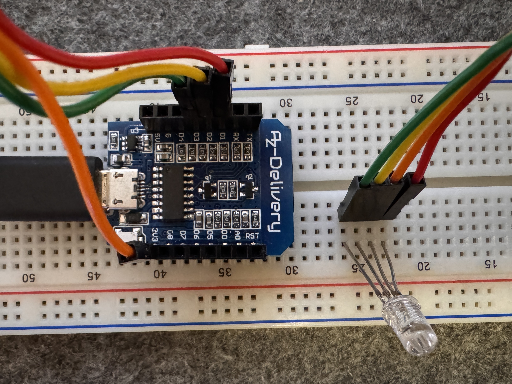
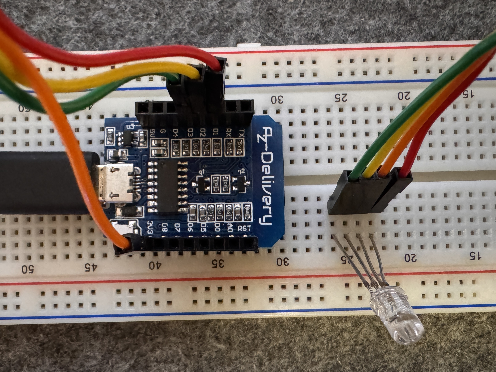

3. LED Sequence
Step-by-Step Guide: Controlling an RGB LED with Arduino
This guide shows you how to write code to control an RGB LED using a microcontroller like Arduino or ESP8266.
What is an RGB LED?
An RGB LED combines Red, Green, and Blue LEDs in one. You can create different colors by turning each one on or off.
What You Need
- 1x RGB LED
- 1x ESP8266 microcontroller
- Wires + breadboard
- Arduino IDE installed
 

Step 1: Define the Pins
Every LED leg (red, green, and blue) must be connected to a pin on the microcontroller.
In the code, we give each pin a name using a variable. This helps us refer to the pins later in an easy way.
Think of it like naming a contact in your phone. Instead of remembering the number, you just write “Red LED”.
Here’s what each line means:
-
const int redPin = D1;→ The red LED wire is connected to pin D1. -
const int greenPin = D2;→ The green LED wire is connected to pin D2. -
const int bluePin = D3;→ The blue LED wire is connected to pin D3.
const int redPin = D1;
const int greenPin = D2;
const int bluePin = D3;Step 2: Write the Setup Function
The setup() function runs only once when the board turns
on. It’s like turning on a machine and pressing the “start” button.
Here, we tell the board that we’ll be sending signals out through the LED pins. That’s called “output mode”.
We also turn off all the colors to start with. Since we are using a
common cathode LED, we turn it off by writing
HIGH.
void setup() {
pinMode(redPin, OUTPUT);
pinMode(greenPin, OUTPUT);
pinMode(bluePin, OUTPUT);
digitalWrite(redPin, HIGH);
digitalWrite(greenPin, HIGH);
digitalWrite(bluePin, HIGH);
}Step 3: Write the Loop Function
The loop() function runs again and again, forever. This
is where we create the color-changing pattern.
The LED lights turn on for 1 second each, then turn off, and repeat.
LOW= turn LED ON (for this type of LED)HIGH= turn LED OFFdelay(1000)= wait for 1 second
void loop() {
// RED
digitalWrite(redPin, LOW);
digitalWrite(greenPin, HIGH);
digitalWrite(bluePin, HIGH);
delay(1000);
// GREEN
digitalWrite(redPin, HIGH);
digitalWrite(greenPin, LOW);
digitalWrite(bluePin, HIGH);
delay(1000);
// BLUE
digitalWrite(redPin, HIGH);
digitalWrite(greenPin, HIGH);
digitalWrite(bluePin, LOW);
delay(1000);
// ALL OFF
digitalWrite(redPin, HIGH);
digitalWrite(greenPin, HIGH);
digitalWrite(bluePin, HIGH);
delay(1000);
}What Does It Do?
This code controls an RGB LED using three digital pins on a microcontroller, like ESP8266 or Arduino.
Pin Setup
D1controls REDD2controls GREEND3controls BLUE
Program Flow
- Red turns ON for 1 second
- Green turns ON for 1 second
- Blue turns ON for 1 second
- All turn OFF for 1 second
- The loop repeats forever
Congratulations! You’ve just made your first color-changing LED program!
Full Code Overview
Here is the complete code all in one place. You can copy and paste this into the Arduino IDE to upload it to your board:
const int redPin = D1;
const int greenPin = D2;
const int bluePin = D3;
void setup() {
pinMode(redPin, OUTPUT);
pinMode(greenPin, OUTPUT);
pinMode(bluePin, OUTPUT);
digitalWrite(redPin, HIGH);
digitalWrite(greenPin, HIGH);
digitalWrite(bluePin, HIGH);
}
void loop() {
// RED
digitalWrite(redPin, LOW);
digitalWrite(greenPin, HIGH);
digitalWrite(bluePin, HIGH);
delay(1000);
// GREEN
digitalWrite(redPin, HIGH);
digitalWrite(greenPin, LOW);
digitalWrite(bluePin, HIGH);
delay(1000);
// BLUE
digitalWrite(redPin, HIGH);
digitalWrite(greenPin, HIGH);
digitalWrite(bluePin, LOW);
delay(1000);
// ALL OFF
digitalWrite(redPin, HIGH);
digitalWrite(greenPin, HIGH);
digitalWrite(bluePin, HIGH);
delay(1000);
}